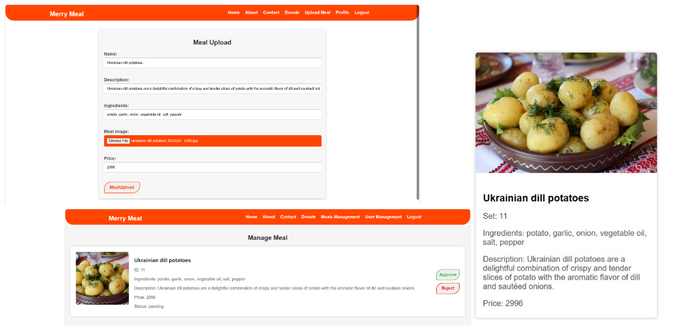

The registration process for MerryMeal organization offers separate forms for members, partners, and volunteers, inspired by research on similar Meals on Wheels websites. Each form requires users to submit their name, email, password, and an image providing evidence relevant to their application. Admin approval is necessary for all registrations, with the submitted images serving as crucial evidence for eligibility. For partners, FDA approval images are required, while volunteers are encouraged to provide details of their abilities or certificates. Upon review, the admin informs applicants via email of their approval or rejection, ensuring only qualified individuals gain access to MerryMeal's services.
The donation system in our application lets people support us by giving money. We got the idea from other charity websites where anyone can donate easily. Our system is open to everyone, so anyone who wants to help can donate without any hassle. To donate, you just need to provide your name, how much you want to give, and your payment details. You don't have to sign up or log in to donate, making it simple and quick for anyone who wants to help out.
For menu planning, partners will be able to upload the menu that they will be providing. Those menus will be assessed by the admin whether the meals are safe and suitable for the members or not. In this way, menu planning and food safety management is carried out in our application. Partners will have to login first to upload the menu that they want to provide by filling the form of meal name, ingredients, description and the image of the meal. They should put the information about the menu correctly and carefully since admin will be determining the result for the approval of menu. Only after the admin approval, the menu will be displayed in to member side for the members to make order.
Members will be able to make orders by filling and submitting the order form. In the order form, they will need to put set id of meal set that they want to order, the day they want and their location in latitude and longitude. Members can see information of menu displayed in the menu page. The menus are healthy and safe for everyone that members can make orders with no worries because those are uploaded only after the admin approval. After members submit the order form by clicking create order button, the data will be stored in the database. There is also a constraint that the delivering hot noon meal service will be available only for weekdays within 10-kilometer radius of the kitchen. If the order is for weekends or if the member’s location is not within 10-kilometer radius from the outsource kitchen, they will be provided frozen meal. To satisfy this constraint, the program will calculate the distance between member and partner’s kitchen that will provide the meal which member wants to order and also check the day which member wants. According to calculation result and the day that member selects, a message informing the member whether they will get hot meal or frozen meal will be displayed. Moreover, members will be able to request care giver for care service.
Orders and caregiver requests that are made by members will be carried out by the volunteers. There are two pages for volunteers in each of which will be retrieving the data about orders and caregiver requests from the members. Volunteers can take the pending delivery and care giver tasks and once they have taken a task, the program provides functions to manage these tasks. In the application, once the volunteer has taken a pending task, it will be moved to that volunteer taken tasks table and no other volunteer will be able to see the task. In this way, there will not be conflicts happening. After they have finished the task, they can finish it.